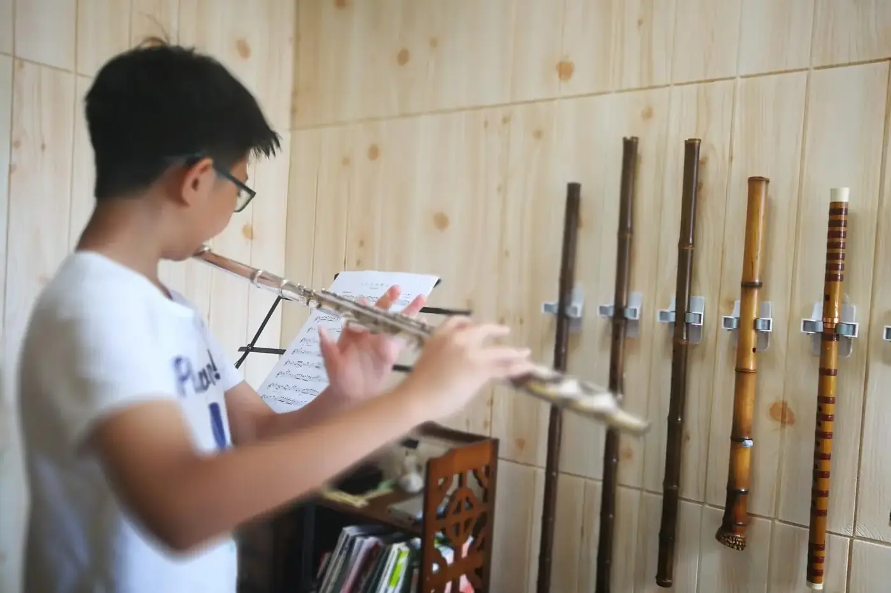

長笛同一個音每天不同，因為氣溫、吹奏角度和力度都會改變音高。先讓樂器在正常吹奏中適應環境，固定音量和姿勢，耳朵先判斷偏高或偏低，再看調音器。

眼睛一直追着指針，耳朵反而忘了工作。調音器適合提供參考，答案卻要回到旋律和合奏裏找。
為甚麼每天都不同？
同一個音，在不同音量下已可能有偏差。不要急着認定自己每天音準都不一樣，先做一個小測試。
選同一個音，用平穩的中音量、較輕和較強各錄一次，先用耳朵比較，再看調音器。把結果記作「力度改變時的傾向」。
聲音本身忽大忽小，指針的擺動可能只是反映吹奏不穩，這時不適合調整管身。指針短暫擺動，也不用大幅移動管身。先整理發聲，再判斷音準。
調音器之外先聽方向
練習可以分兩段：先用儀器認識偏差，再把畫面移開，用聽覺判斷。
選一個熟悉的音，用舒適音量吹穩，先猜它偏高、偏低，還是相近，然後才看調音器。猜錯也有用，耳朵和數值就是這樣接起來的。
每次只做幾次。看得太久，人會越來越緊張，嘴形也越改越多。
也可以用可靠的持續參考音，先聽一會，再吹同音或簡單音程。音量不要大到蓋過參考聲。留意兩個聲音能否平穩共存，不要為了讓畫面變綠就過度轉動長笛。
平時的檢查工具是持續音、相鄰音、唱名和錄音，每次範圍小一點。音準放在相鄰音和短句裏聽，才知道音高怎樣回到句子。
一星期後重聽最初的錄音。你可能先聽見「往上飄」或「句尾掉下去」，未必說得出差了多少音分，這已是有用的進展。
溫度、氣流與角度怎樣查？
調音前先吹一會，讓管身適應環境。房間、管身溫度和發聲狀態要一起看，不能只怪手上的笛。
一般來說，管身還涼時音高偏低，吹暖後會回升。剛由冷氣房拿出來，或者坐在冷氣口下，都不要急着下判斷。
吹口角度和氣流也會牽動音高。吹口向內轉，音高通常偏低，向外則偏高；氣流加強時音高易往上，放輕時易往下。這是傾向，要用自己的錄音確認。
在中等音量找到穩定位置，再試小幅度的強弱變化，記下容易偏離的地方。
這些記錄帶到課堂，老師可以連同氣流和嘴形一起觀察。判斷是耳朵、手型還是氣息的問題，也要先聽過相鄰音的距離。
與鋼琴或持續參考音合作時，聽聲音是否融合，再作小幅調整。指針的數值慢慢變成耳朵聽得懂的關係，合奏時的判斷才會來得更早、更細。
常見問題
調音器顯示準，為甚麼合奏仍然不合？
調音器只量單音。合奏要聽和聲中的位置和聲音是否融合，再作小幅調整。
每次練習都要調音嗎？
先吹一會，讓樂器適應環境再比較。聲音未穩時，看調音器的意義不大。
音準偏了，應該馬上拉管身嗎？
不用。指針短暫擺動時先別動管身，整理發聲，確認穩定地偏了，才小幅調整。
今晚用調音器玩一個小遊戲：吹穩一個音，先猜方向，再看答案，只做五次。在合奏裏怎樣聽別人，接着讀長笛合奏與伴奏。